All fourteen editable GB Studio scenes are assembled. Boot, music cues, skip, final title, replay and title-to-selection are implemented. Strict visual acceptance remains open because native scene loads extend some designed flashes. Supplied images, palettes and music are unchanged.
Exact ROM: ceacfa2703157440fd5ee338aebd781d894301870a0aa3de4165ad020d91e147. Color Only, 4 MiB. 167 nonempty banks; highest bank 168; 2,321,764 allocated ROM bytes.
| Item | Result | Evidence / limitation |
|---|---|---|
| No added text in the intro | PASS | All 14 native scene scripts and the 15 screenshot pairs; supplied jersey numbers remain in the supplied art. |
| No unplanned white/black frames | FAIL | Some incoming scene loads extend designed flashes. At 25.1s the native frame remains white while the reference already shows the rollcall. See pair-25_1.png and frames.json. |
| Fades only after shots 6 and 14 | PASS | Per-frame fade_running values in frames.json. Nonmodal native fade steps remain skippable. |
| Cuts match the reference/music exactly | FAIL | Music routine 0 drives all cut requests and per-scene VBlank timestamps. Visible scene loading is longer than the simulator reference; strict frame matching therefore fails. |
| Actor offset calibrated at Matus's fingertips | PASS | Set Position uses timeline + (0,8) pixels. Stationary ball: 384/384 original opaque pixels match native 5-bit palette output at the expected coordinates. See pair-9_6.png. |
| A and START skip to title | PASS | 34/34 real-ROM input tests, including two-frame taps during the glass shot and both fades. See actions.json and skip screenshots. Earlier failed short taps are retained under earlier-short-tap/. |
| Intro ends on title; replay and Play Game work | PASS | capture.json, title.png, replay.png, selection.png and actions.json. |
| Supplied assets unchanged; manual color remains off | PASS | SHA-256 equality for all 124 imported files; all 14 autoColor fields are false. |
| Tile/palette counts match validation | PASS | ModRetro graphics analysis in build.json. Compiled flip deduplication reduces allocation without altering PNGs. |
Audit · Captures and cuts · Every-frame log · Controller tests · Build and graphics analysis · GBDK ROM usage
| Scene | validation.json | Reported unique tiles | Compiled with flips | Palette slots |
|---|---|---|---|---|
| intro_01_court | 243 | 243 | 219 | 8 |
| intro_02_chrux_face | 133 | 133 | 129 | 8 |
| intro_03_chrux_run | 133 | 133 | 132 | 8 |
| intro_04_matus | 150 | 150 | 148 | 8 |
| intro_05_magic | 92 | 92 | 90 | 8 |
| intro_06_magic_block | 138 | 138 | 134 | 8 |
| intro_07_bambi_rise | 82 | 82 | 79 | 8 |
| intro_08_bambi_dunk | 151 | 151 | 148 | 8 |
| intro_09_chompa | 113 | 113 | 112 | 8 |
| intro_10_rollcall_1 | 43 | 43 | 42 | 8 |
| intro_11_rollcall_2 | 90 | 90 | 88 | 8 |
| intro_12_rollcall_3 | 129 | 129 | 125 | 8 |
| intro_13_rollcall_4 | 170 | 170 | 166 | 8 |
| intro_14_rollcall_5 | 218 | 218 | 213 | 8 |
Reference on the left; exact-ROM screenshot on the right. Click a pair for its original dimensions.
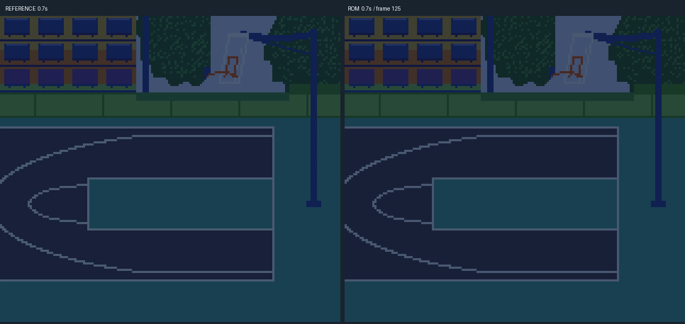
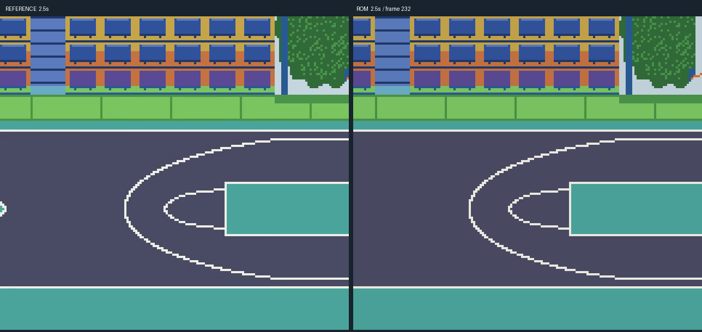
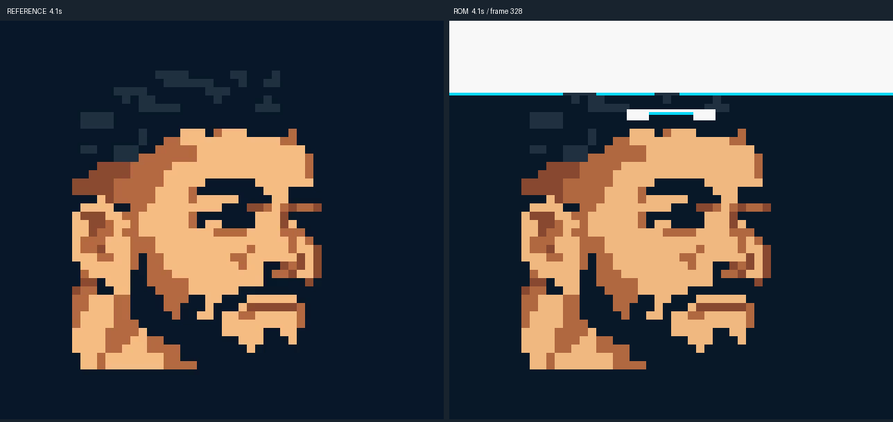
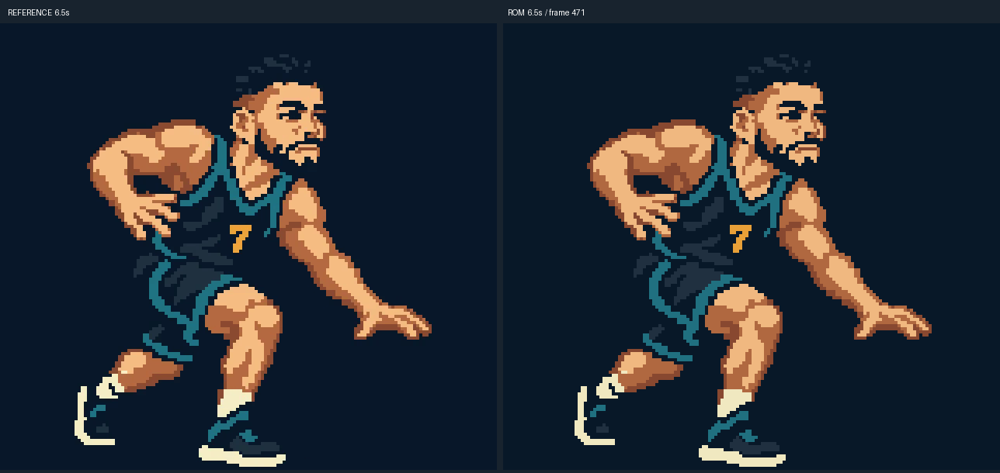
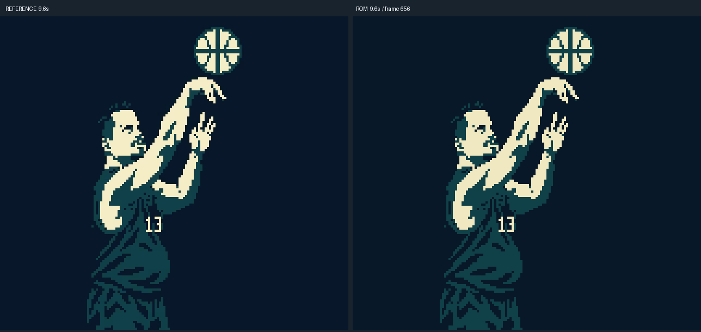
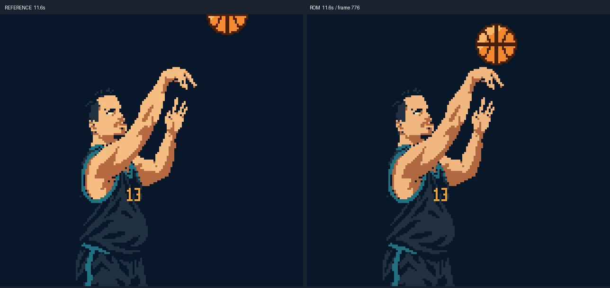
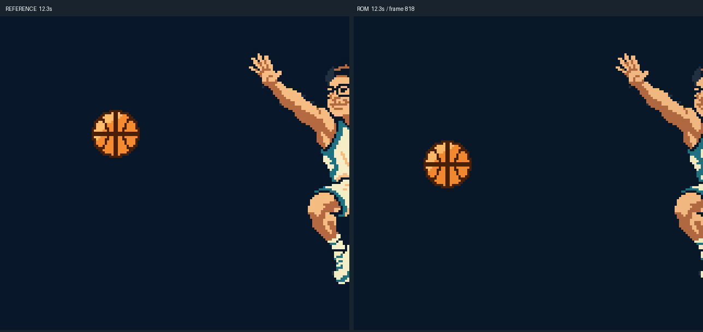
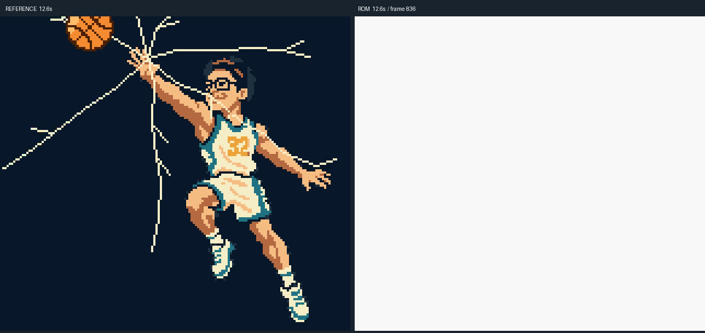
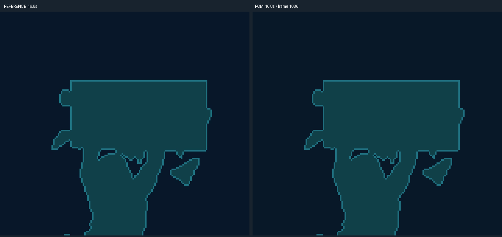
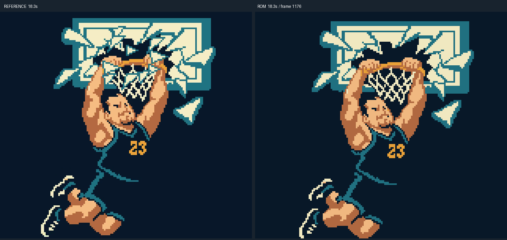
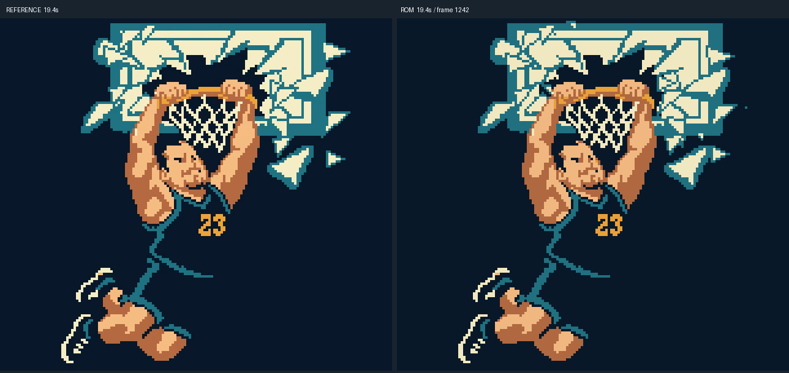
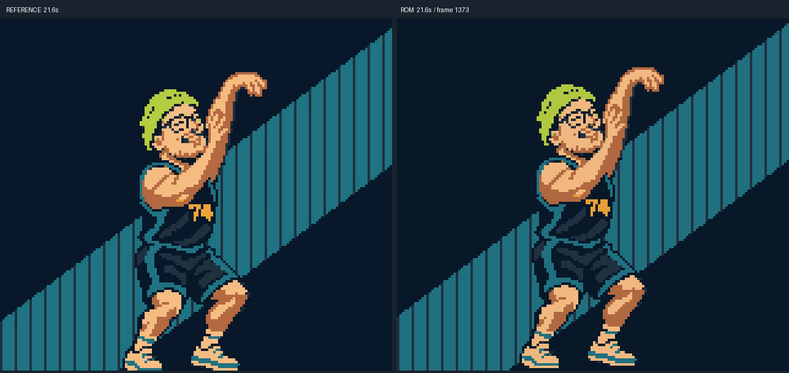
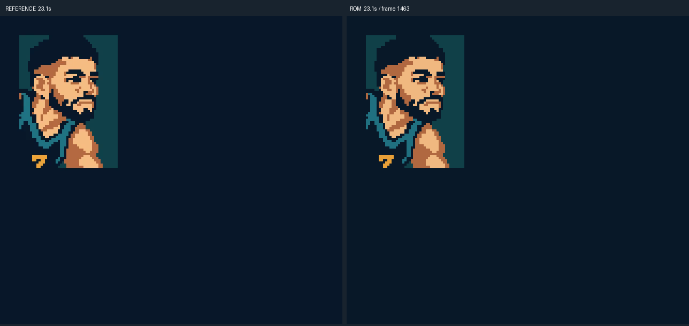
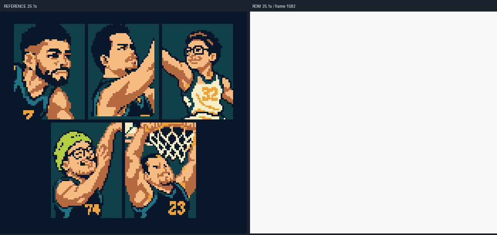
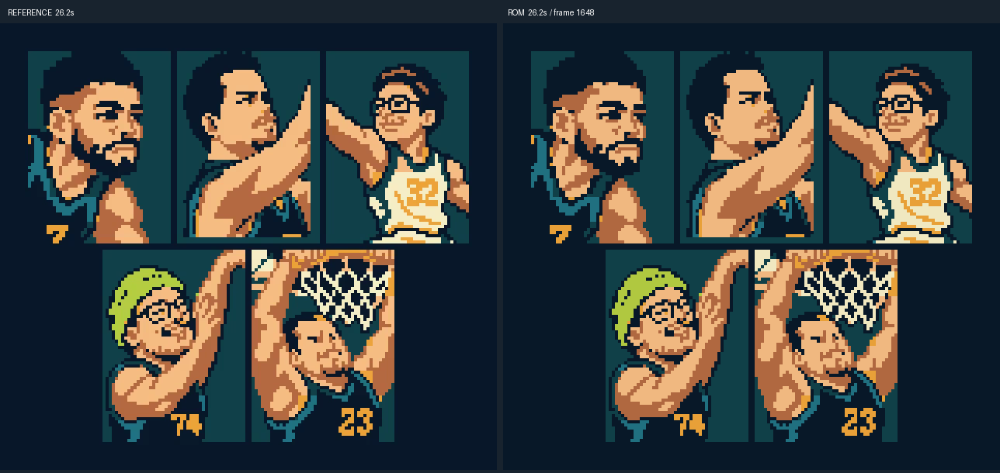


Host simulation tests and native sprite-loader budget passed (190/192 court sprite tiles). See oam-sample.json for the exact-build glass-shot hardware sample. No physical hardware acceptance is claimed.